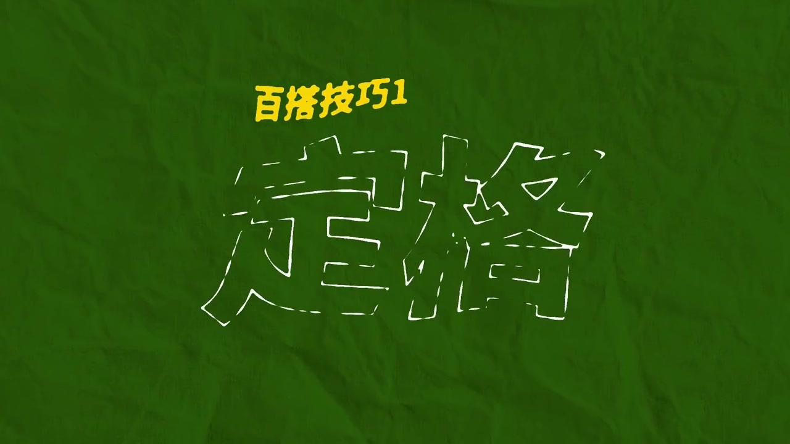
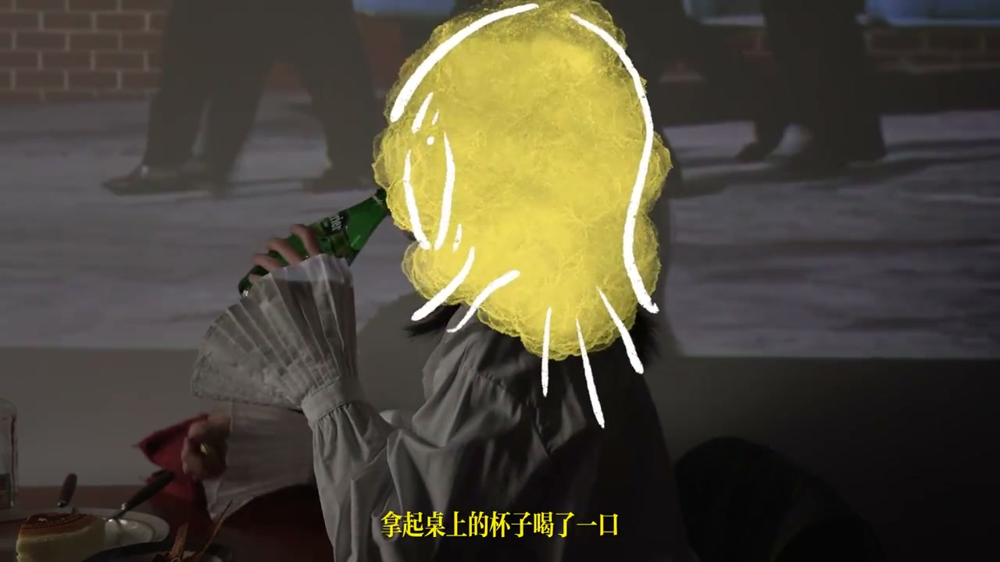
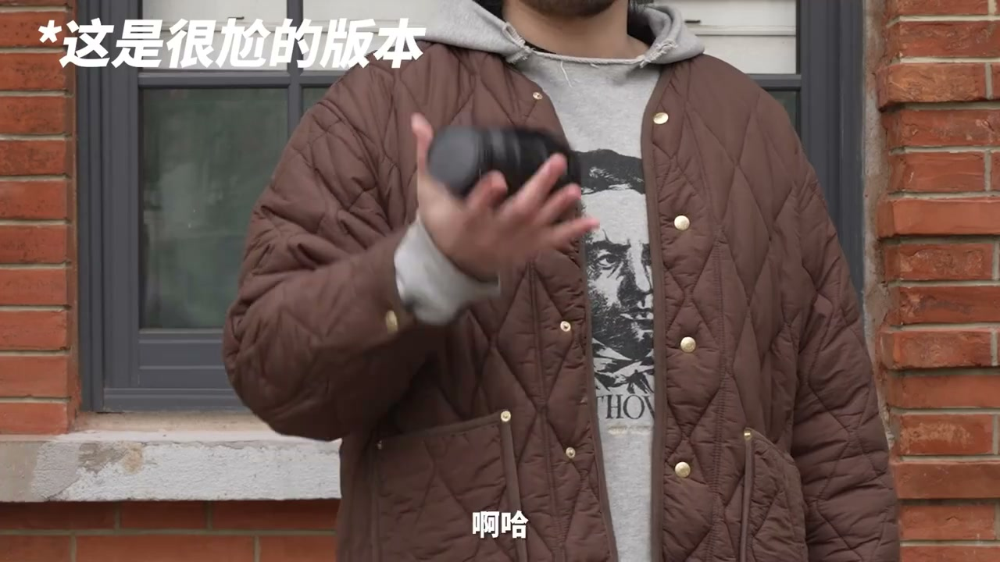
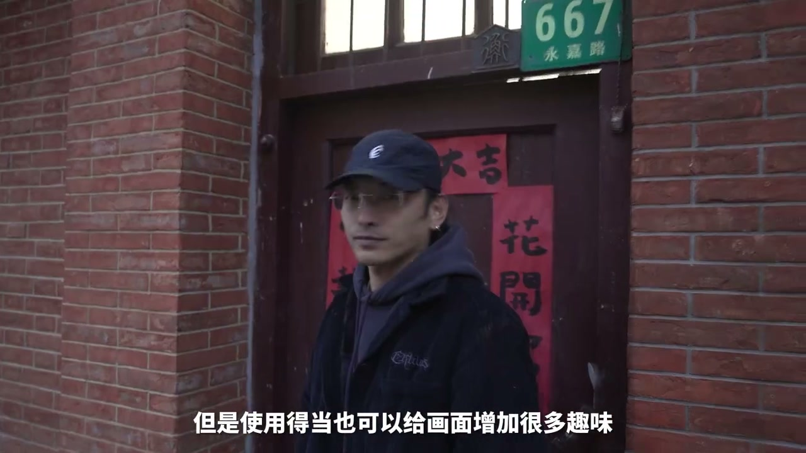

01
中文
首先他们做起来非常简单，不会像那些酷炫的特效场面那么复杂和显眼。
EN
First, they're simple—nothing like flashy, complex effects.
表达提示simple tricks（简单技巧）

Scene English · Vlog · 百搭技巧
Versatile! These 2 Video Tricks Work in Every Vlog
🎧 语音讲解
Opening: we can't help but love these vide…
情境简单不出彩但百搭的技巧，就像牛仔裤。
首先他们做起来非常简单，不会像那些酷炫的特效场面那么复杂和显眼。
First, they're simple—nothing like flashy, complex effects.
表达提示simple tricks（简单技巧）
也正因为如此，他们很难产生审美疲劳。
And precisely that makes them hard to grow tired of.
表达提示no fatigue（不疲劳）
这样的技巧就像一条牛仔裤或者一双白球鞋一样，可以被称之为百搭单品。
These tricks are like jeans or white sneakers—true basics.
表达提示wardrobe basics（百搭单品）
simple tricks（简单技巧
no fatigue（不疲劳

Trick one · freeze frame: trust me, your n…
情境定格打断情绪，反向利用制造艺术感。
我给画面施加了一个定格的效果，你几乎可以在任何剪辑软件中一键实现它。
I applied a freeze-frame—one click in almost any editor.
表达提示freeze frame（定格）
连贯的动作被停住了，整个情绪被打断了。
The fluid motion stops and the emotion is cut.
表达提示emotion cut（情绪打断）
不妨逆向思维，把之前难受的点加以利用。
Think in reverse and exploit the very discomfort.
表达提示reverse thinking（逆向思维）
有些画面在某一瞬间定格，真的比连贯起来更有艺术性。
Some shots frozen at one instant are more artistic than flowing footage.
表达提示artistic freeze（定格艺术）
freeze frame（定格
emotion cut（情绪打断

More freeze-frame plays: casual life foota…
情境定格+运动模糊，截取最有动感的一帧。
有的情节直接演出来难免会很假，尤其是一些动作场面。
Some scenes acted out directly are inevitably fake, especially action.
表达提示fake acting（表演太假）
原地甩动，把运动模糊给擦出来，再截取最有动感的那一帧。
Whip in place to drag motion blur, then freeze the most dynamic frame.
表达提示motion blur（运动模糊）
这种定格画面快切在电影里也会被用来制造压缩时间的蒙太奇。
This freeze-cut montage is used in film to compress time.
表达提示compress time（压缩时间）
fake acting（表演太假
motion blur（运动模糊

Freeze-frame uses: the scenes for freeze f…
情境开头标题、结尾抽离、众生相。
像开头出标题啊，结尾的时候让观众情绪抽离出来啊。
Titles at the start, or letting the emotion pull away at the end.
表达提示titles and release（标题与抽离）
或者是想让观众注意画面中的众生相。
Or drawing attention to the crowd in a frame.
表达提示crowd in frame（众生相）
我几乎每期视频都会用到这个技巧，真的非常百搭。
I use it in almost every episode—truly versatile.
表达提示truly versatile（非常百搭）
titles and release（标题与抽离
crowd in frame（众生相

Trick two · quick zoom: the second basic t…
情境低快门+快速变焦呈现复古幽默感。
很随意地拉一下焦段，又能吸引注意力，又能让画面的动态更加丰富。
Casually pulling the zoom grabs attention and enriches motion.
表达提示pull the zoom（拉焦段）
当我把快门速度调低的时候，这种快速变焦就会呈现出一种老武侠片的感觉。
With a low shutter speed, the quick zoom takes on an old wuxia feel.
表达提示old wuxia feel（老武侠感）
很多导演像昆汀、韦斯·安德森都很喜欢使用它，可以用来强调某个信息。
Directors like Tarantino and Wes Anderson love it—to stress information.
表达提示stress a point（强调信息）
pull the zoom（拉焦段
old wuxia feel（老武侠感

Prerequisites and combining: shooting this…
情境大跨度变焦镜头，或后期打关键帧。
我们需要的一颗焦段跨度比较大的变焦镜头。
You need a zoom lens with a large focal-length range.
表达提示wide zoom range（大跨度变焦）
可以通过后期给缩放打关键帧来实现类似的效果。
You can fake it in post by keyframing the scale.
表达提示keyframe the scale（关键帧缩放）
我还是更喜欢实拍出来的质感。
I still prefer the texture of real shooting.
表达提示real texture（实拍质感）
wide zoom range（大跨度变焦
keyframe the scale（关键帧缩放
说技巧特点
说定格感受
说定格玩法
说快变焦
说拍摄前提
酷炫特效反而易疲劳。
定格要刻意用在艺术瞬间。
动作场面演出来太假。
没有变焦就后期打关键帧。
快变焦要配合低快门。